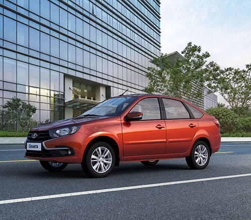
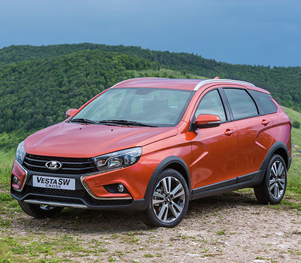

Это самая недорогая и поэтому самая популярная модель. Автомобиль производителем позиционируется как народный. В комплекте шины на литых дисках 15", выкидной ключ для замка зажигания, круиз контроль, функция ПРОВОДИ МЕНЯ ДОМОЙ, когда фары не гаснут несколько десятков секунд, пока человек идет от машины домой. Кроме этого, удовольствие от вождения повышают такие функции, как система торможения ABS+BAS, система курсовой устойчивости ESC, помощник на подъеме ( для автоматической трансмиссии). Линейка двигателей мощностью 87, 98 и 106 л.с. позволяет выбрать комплектацию под свой стиль вождения. 2 подушки безопасности, система ЭРА-ГЛОНАСС, задние датчики парковки - все это способствует улучшению безопасности пассажиров.
LADA Vesta Cross сочетает в себе скоростной седан и проходимость неплохого кроссовера. Клиренс в 203 мм позволяет заезжать на бордюры и часто выручает в загородных вояжах, особенно зимой. Защитные пластиковые накладки на порогах, дверях и колесных арках предохраняют лакокрасочное покрытие кузова в поездках по грунтовым дорогам. Мультимедийная система с 7-дюймовым экраном – это и радио, и музыка с карты памяти, и телефон hands free, и навигатор, и монитор парктроника. Большой салон особенно полезен в дальних путешествиях. В двухцветном интерьере продумано все до мелочей – от регулировок руля и водительского кресла до новых подстаканников, от перчаточного ящика с охлаждением – до подогрева руля и всех сидений.
